Columns are trainer preview columns; click images for full resolution.
| train/eval | arch | lr | ΔPSNR | wΔPSNR | edge Δ | temporal Δ | improved | sec |
|---|---|---|---|---|---|---|---|---|
| 5/1 | direct-residual | 0.001 | -0.23017038708297832 | -0.20154721051262925 | 0.17322691606722884 | -0.0750146504293383 | 0.3828125 | 27.999547958374023 |
| 10/2 | direct-residual | 0.001 | -0.08586158774069474 | -0.052192776598019464 | 0.1891114848354647 | -0.006048948494672857 | 0.3828125 | 31.591471195220947 |
| 50/5 | direct-residual | 0.001 | 0.003059047547893101 | 0.025576944238736132 | 0.24366923260427598 | -0.006009802934514141 | 0.515625 | 37.819032192230225 |
| 50/5 | gated-detail-residual | 0.001 | -0.08173801248680235 | -0.018191550959592462 | 0.22510794849264215 | -0.0001826266568656365 | 0.3875 | 82.97780561447144 |
| 50/5 | direct-residual | 0.004 | -0.17620419913084362 | -0.10079820318241417 | 0.10880020854610706 | -0.00039023629113899005 | 0.28125 | 76.04488015174866 |
{
"trainPairCount": 5,
"evalPairCount": 1,
"modelArch": "direct-residual",
"learningRate": 0.001,
"hiddenChannels": 16,
"detailGate": null,
"baselinePsnr": 35.59418477286537,
"modelPsnr": 35.36401438578239,
"deltaPsnr": -0.23017038708297832,
"weightedDeltaPsnr": -0.20154721051262925,
"edgeBandDeltaPsnr": 0.17322691606722884,
"temporalDeltaPsnr": -0.0750146504293383,
"improvedPatchFraction": 0.3828125,
"durationSeconds": 27.999547958374023,
"requestedEvalPairCount": 1,
"evalSelection": "even",
"residualOutputLimit": 0.35,
"device": "Device(gpu, 0)"
}
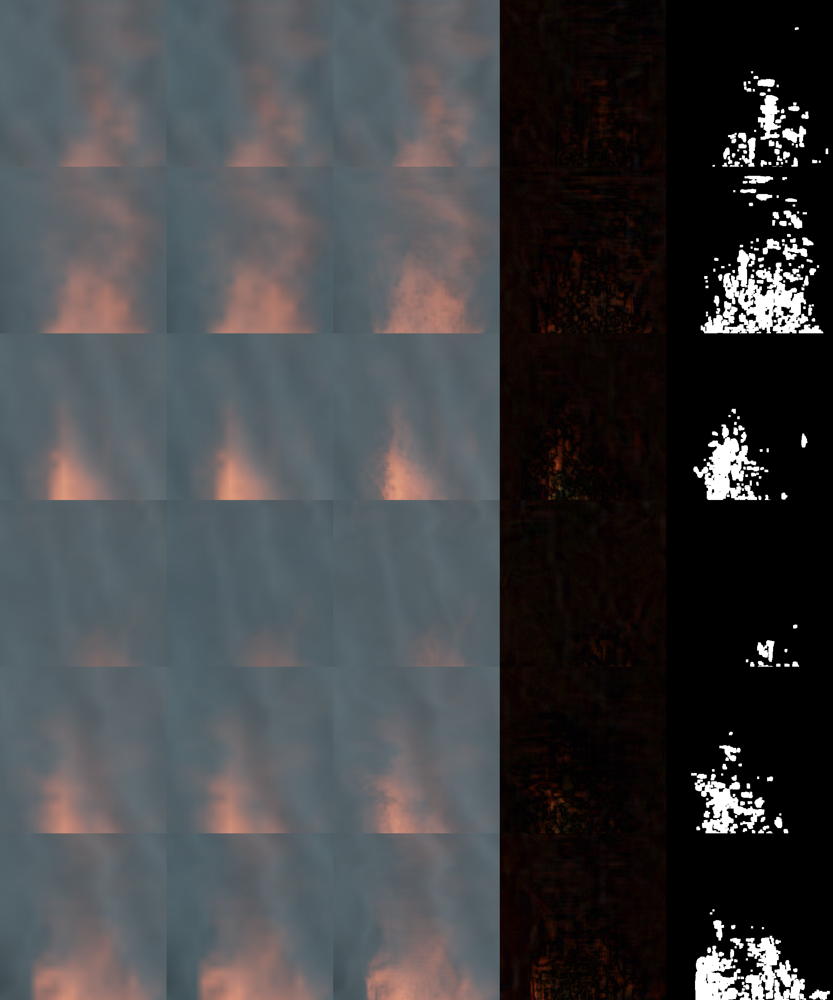
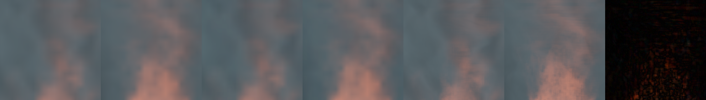
{
"trainPairCount": 10,
"evalPairCount": 2,
"modelArch": "direct-residual",
"learningRate": 0.001,
"hiddenChannels": 16,
"detailGate": null,
"baselinePsnr": 36.50740168392743,
"modelPsnr": 36.42154009618673,
"deltaPsnr": -0.08586158774069474,
"weightedDeltaPsnr": -0.052192776598019464,
"edgeBandDeltaPsnr": 0.1891114848354647,
"temporalDeltaPsnr": -0.006048948494672857,
"improvedPatchFraction": 0.3828125,
"durationSeconds": 31.591471195220947,
"requestedEvalPairCount": 2,
"evalSelection": "even",
"residualOutputLimit": 0.35,
"device": "Device(gpu, 0)"
}
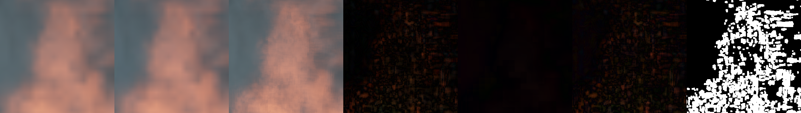
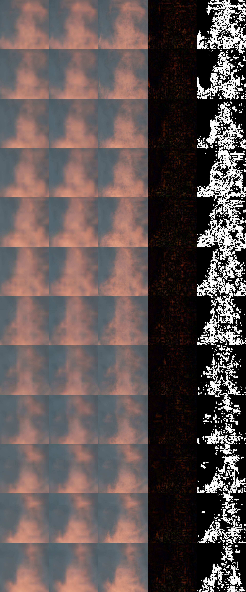
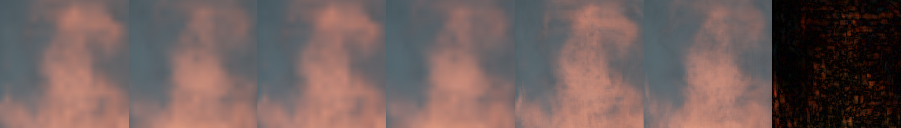
{
"trainPairCount": 50,
"evalPairCount": 5,
"modelArch": "direct-residual",
"learningRate": 0.001,
"hiddenChannels": 16,
"detailGate": null,
"baselinePsnr": 35.49929371467972,
"modelPsnr": 35.502352762227616,
"deltaPsnr": 0.003059047547893101,
"weightedDeltaPsnr": 0.025576944238736132,
"edgeBandDeltaPsnr": 0.24366923260427598,
"temporalDeltaPsnr": -0.006009802934514141,
"improvedPatchFraction": 0.515625,
"durationSeconds": 37.819032192230225,
"requestedEvalPairCount": 5,
"evalSelection": "even",
"residualOutputLimit": 0.35,
"device": "Device(gpu, 0)"
}
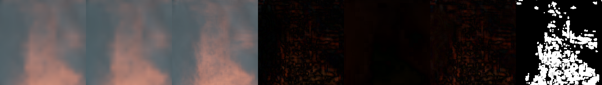
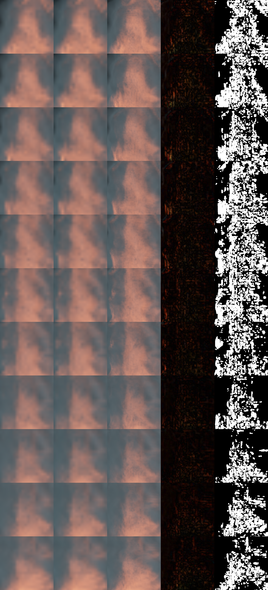
{
"trainPairCount": 50,
"evalPairCount": 5,
"modelArch": "gated-detail-residual",
"learningRate": 0.001,
"hiddenChannels": 32,
"detailGate": 4.0,
"baselinePsnr": 35.27138063321215,
"modelPsnr": 35.189642620725344,
"deltaPsnr": -0.08173801248680235,
"weightedDeltaPsnr": -0.018191550959592462,
"edgeBandDeltaPsnr": 0.22510794849264215,
"temporalDeltaPsnr": -0.0001826266568656365,
"improvedPatchFraction": 0.3875,
"durationSeconds": 82.97780561447144,
"requestedEvalPairCount": 5,
"evalSelection": "even",
"residualOutputLimit": 0.8,
"device": "Device(gpu, 0)"
}
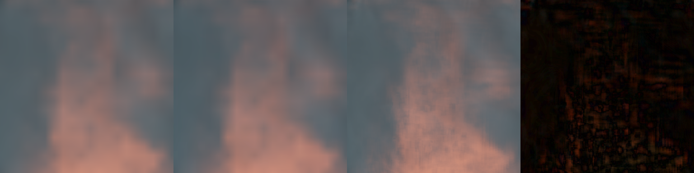
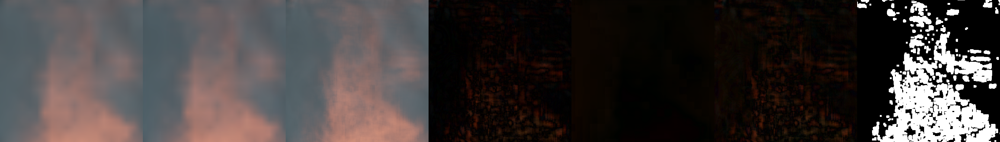
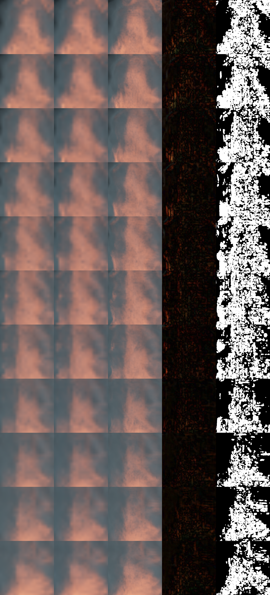
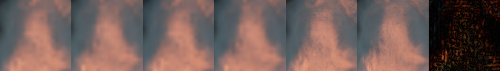
{
"trainPairCount": 50,
"evalPairCount": 5,
"modelArch": "direct-residual",
"learningRate": 0.004,
"hiddenChannels": 16,
"detailGate": null,
"baselinePsnr": 35.27138063321215,
"modelPsnr": 35.0951764340813,
"deltaPsnr": -0.17620419913084362,
"weightedDeltaPsnr": -0.10079820318241417,
"edgeBandDeltaPsnr": 0.10880020854610706,
"temporalDeltaPsnr": -0.00039023629113899005,
"improvedPatchFraction": 0.28125,
"durationSeconds": 76.04488015174866,
"requestedEvalPairCount": 5,
"evalSelection": "even",
"residualOutputLimit": 1.0,
"device": "Device(gpu, 0)"
}
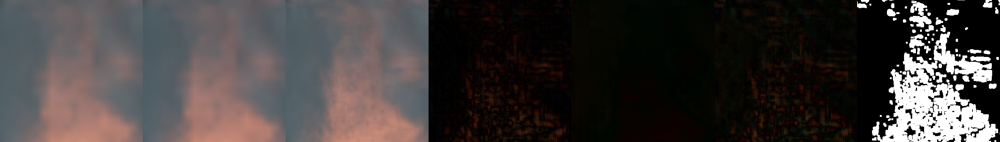
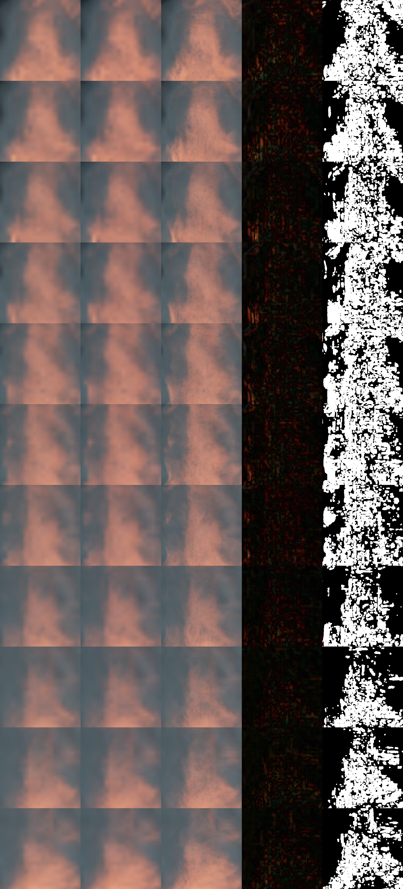
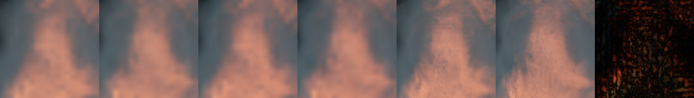